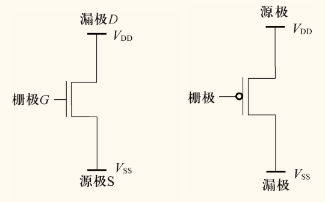
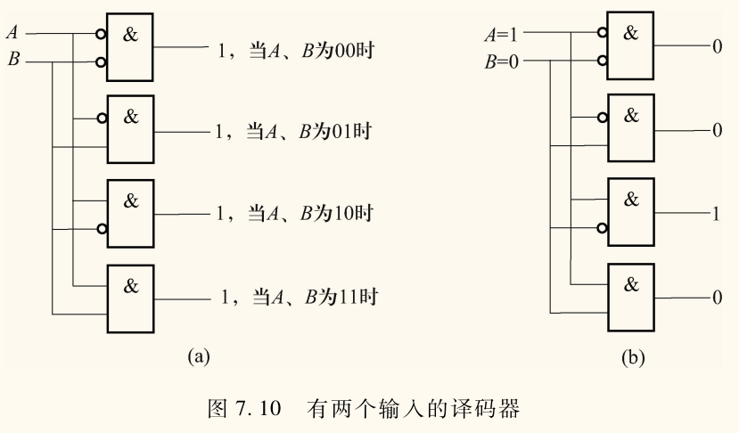
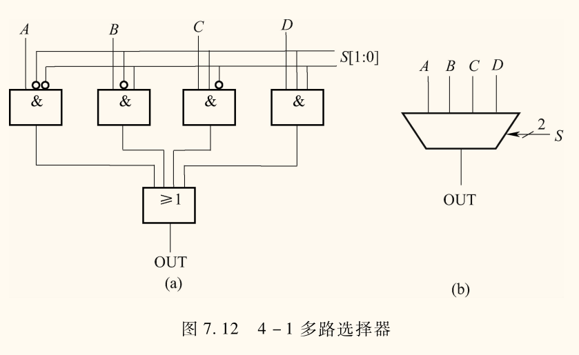
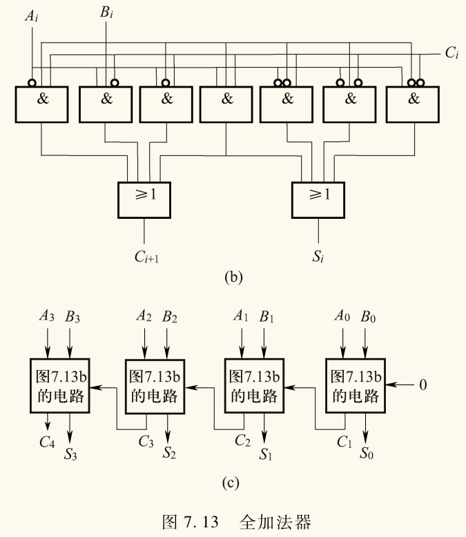

二进制逻辑运算
布尔代数部分见离散数学，这里懒得再写一遍了。
- 与（）：
- 或（）：
- 非（）：
位组合编号规则
- 从右向左，顺序编号，最右边一位是
- 最左边是
- 记作
位屏蔽/掩码：保留某些位。
- 如保留最右边的 4 位，屏蔽掉其他位，可以用 进行与运算。
- 原理是
判断两个位组合是否相同：异或（），结果为 代表相同。
C 语言中的位运算符
1 | a & b // 与 |
- 左移：零填充（低位补 ），相当于乘
- 右移：符号扩展（高位补符号位），相当于除
优先级（数字越小优先级越高）
- 非（1）
- 左移、右移（2）
- 与（3）
- 异或（4）
- 或（5）
晶体管和门电路
晶体管
MOS（Metal-Oxide Semiconductor，金属氧化物半导体）晶体管，是数字逻辑电路的基本元件，相当于开关。
- P 型
- N 型
下图分别为 N 型和 P 型的 MOS 晶体管。
- N 型 MOS 晶体管有 3 个终端，控制端称为栅极（Gate），接地一端称为源极（Source）。源极电压记作 ，接正电压一端称为漏极（Drain），漏极电压记作 。
- 当栅极电压为 时，源极和漏极之间的电阻很大，相当于断路，即截止
- 当栅极电压为 时，源极和漏极之间的电阻很小，相当于通路，即导通。
- P 型 MOS 晶体管工作原理与 N 型相反。
- 当栅极电压为 时，源极和漏极之间的电阻很小，相当于通路，即导通。
- 当栅极电压为 时，源极和漏极之间的电阻很大，相当于断路，即截止

- N 型 MOS 晶体管要求源极不能接电源正极
- P 型 MOS 晶体管要求源极不能接地
CMOS（Complementary MOS）电路：既包含 N 型 MOS 晶体管，又包含 P 型 MOS 晶体管的电路，即互补金属氧化物半导体电路。
门电路
下面第一张图是晶体管 ANSI/IEEE 符号，第二张图是门电路的 IEC 符号。
无关内容：CSS 图片深浅模式切换
控制台切换深浅色，可以发现下面的图片颜色也会跟着切换，始终保持最清晰的显示效果。
然而 markdown 比较弱，最直接的方式自然是直接使用 HTML 再加 CSS 实现。不过我在网上搜了一下，找到了可以保持 markdown 图片格式的情况下随深浅模式切换图片黑白的方式。
参考：
最后就是在前面添加一个 style 标签，内容如下。
1 | @media (prefers-color-scheme: dark) { |
大致意思就是，在深色模式下，匹配 img 标签中 src 字段以 #invert 结尾的图片，然后进行反色。
接着就是对需要反色的图片，后面加上 #invert，例如
1 |  |
非门
非门（NOT Gate）：只有一个输入端，一个输出端。输出端与输入端相反。


或门
或门（OR Gate）：两个输入端，一个输出端。只有两个输入端都为 时，输出端才为 。


或非门
或非门（NOR Gate）：两个输入端，一个输出端。只有两个输入端都为 时，输出端才为 。


与门
与门（AND Gate）：两个输入端，一个输出端。只有两个输入端都为 时，输出端才为 。


与非门
与非门（NAND Gate）：两个输入端，一个输出端。只有两个输入端都为 时，输出端才为 。


组合逻辑电路
两种基本类型：
- 能存储信息：
- 不能存储信息：判定原件
译码器
译码器：任意时刻下只有一个位输出 ，其它输出 。
- 一般译码器有 个输入， 个输出。

多路选择器
多路选择器：由选择信号选择一个输入连接到输出。
- 一般多路选择器由 条选择线和 个输入组成。

二进制加法全加器
全加器：三个输入，两个输出。
- 两个输入是加数 和 ，一个输入是进位 ，两个输出是和 和进位 。
真值表

PLA
可编程逻辑阵列（Programmable Logic Array，PLA）：仅由与门、或门和非门组成的逻辑电路。
时序逻辑电路
电路听困了，没咋记。
基本存储元件
- 锁存器
- ：Reset，复位
- ：Set，置位
门控 锁存器
- ：Data，数据
- ：Write Enable，写使能
寄存器
由多个门控 锁存器构成。
有限状态机
时钟（Clock）
主从寄存器
由两个门控 锁存器及一个时钟信号构成。
存储器
可唯一标识的单元总数称为存储器的地址空间。
和每一个单元联系在一起的唯一标识符称为存储器的地址。
存储在每个单元中的位数是存储器的寻址能力。大多数存储器单元的寻址能力是 8 位（即 1 字节）。
1 字 1 字节。